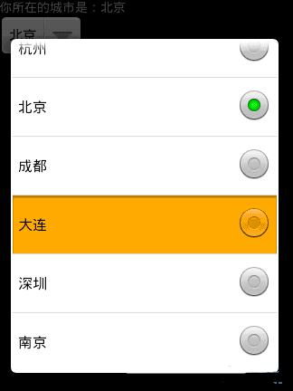

Android Spinner下拉菜单的事件处理
java代码：
import android.app.Activity;import android.os.Bundle;
import android.view.View;
import android.widget.AdapterView;
import android.widget.ArrayAdapter;
import android.widget.Spinner;
import android.widget.TextView;
public class EventTest5 extends Activity {
/** Called when the activity is first created. */
private static final String[] citys = { "杭州", "北京", "成都", "大连", "深圳", "南京" };
private TextView text;
private Spinner spinner;
private ArrayAdapter<String> adapter;
@Override
public void onCreate(Bundle savedInstanceState) {
super.onCreate(savedInstanceState);
setContentView(R.layout.main);
text = (TextView) findViewById(R.id.text);
spinner = (Spinner) findViewById(R.id.spinner);
// 将可选内容与ArrayAdapter连接
adapter = new ArrayAdapter<String>(this,
android.R.layout.simple_spinner_item, citys);
// 设置下拉列表风格
adapter.setDropDownViewResource(android.R.layout.simple_spinner_dropdown_item);
// 将adapter添加到spinner中
spinner.setAdapter(adapter);
// 添加Spinner事件监听
spinner.setOnItemSelectedListener(new Spinner.OnItemSelectedListener() {
@Override
public void onItemSelected(AdapterView<?> arg0, View arg1,
int arg2, long arg3) {
// TODO Auto-generated method stub
text.setText("你所在的城市是：" + citys[arg2]);
// 设置显示当前选择的项
arg0.setVisibility(View.VISIBLE);
}
@Override
public void onNothingSelected(AdapterView<?> arg0) {
}
});
}
}
XML代码：
<?xml version="1.0" encoding="utf-8"?><LinearLayout xmlns:android="http://schemas.android.com/apk/res/android
android:layout_width="fill_parent
android:layout_height="fill_parent
android:orientation="vertical" >
<TextView
android:id="@+id/text
android:layout_width="fill_parent
android:layout_height="wrap_content
android:text="您所在的城市" />
<Spinner
android:id="@+id/spinner
android:layout_width="wrap_content
android:layout_height="wrap_content
android:layout_centerHorizontal="true" />
</LinearLayout>
